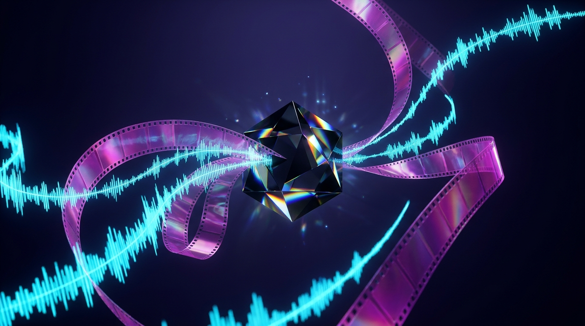
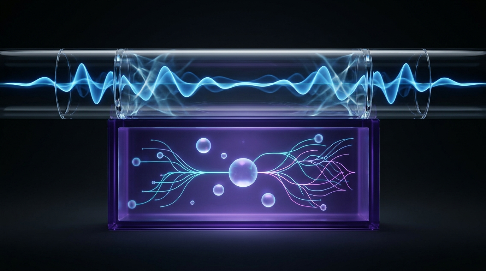

Your complete visual handbook to real-time voice, vision, and reasoning over WebSockets with Gemini 3.8 Live—paired with cinematic 4K video generation, surgical editing, and 30-second extensions via Gemini Omni 1.2 Flash.

google-genai >= 2.30.1 and @google/genai >= 2.29.1 with resumption tokens and WebRTC partners.Modern multimodal apps split cleanly into two complementary rhythms: an always-open WebSocket conduit for sub-second human conversation, and a stateful Interactions loop for asynchronous 4K video creation and multi-turn refinement.
google-genai >= 2.30.1Py / TS
Think of gemini-3.8-live as a live phone call that never hangs up between sentences. You open a persistent WebSocket via client.aio.live.connect, stream raw 16kHz PCM audio and JPEG frames with send_realtime_input, and receive 24kHz PCM voice chunks back in milliseconds—ready for natural barge-in interruptions at any instant.
Think of gemini-omni-1.2-flash as a non-linear film suite driven by client.interactions.create. Each request turns prompts, uploaded Files API assets, or a previous_interaction_id into crisp 360p–4K MP4 output—retaining server-side creative history automatically when store=True.
Every workflow in this guide runs on the unified late-2026 Google GenAI SDKs. Install the current packages below so typed Interactions steps, output_video helpers, and 3.8 Live fields work out of the box.
google-genai >= 2.30.1)pip install -U google-genai from google import genai client = genai.Client() # reads GEMINI_API_KEY
@google/genai >= 2.29.1)npm install @google/genai import { GoogleGenAI } from '@google/genai'; const ai = new GoogleGenAI({});
google-generativeai (Python) and @google/generative-ai (JavaScript) packages are permanently retired. They lack the Gemini 3.8 Live protocol fields and the Interactions steps schema required by Gemini Omni 1.2 Flash.
| Model ID | Transport | Primary Superpower | Key Protocol Rule |
|---|---|---|---|
gemini-3.8-live |
WebSocket | Default low-latency voice & vision dialogue with interleaved reasoning. | Async tools default; omit thinking_level. |
gemini-3.8-live-extended-thinking |
WebSocket | Deep multi-step background reasoning with spoken conversational fillers. | Requires NON_BLOCKING tools & interaction_status. |
gemini-3.5-transcribe-live |
WebSocket | Real-time streaming STT with interim hypotheses & final transcripts. | smart vs verbatim mode + Hybrid VAD. |
gemini-3.5-live-translate-preview |
WebSocket | Speech-to-speech live interpretation across 70+ spoken languages. | Use TranslationConfig + audio transcriptions. |
gemini-omni-1.2-flash |
Interactions API | 3s–15s video creation, keyframe interpolation, edits & 30s extensions. | Natural-language asset binding; ffmpeg prep. |
16kHz native (audio/pcm;rate=16000); other rates are resampled.24kHz sample rate.image/jpeg) streamed on demand via video= to save context tokens.16:9 (default) or vertical 9:16 across every quality tier.360p (640×360), 720p default (1280×720), 1080p (1920×1080), and 4k (3840×2160).3s–15s new/first-frame/R2V (10s default); 3s–10s two-frame transitions & per-turn extensions up to 30s cumulative.ffmpeg, and ffprobe on PATH.Whether you run a custom web workbench or terminal pipeline, every production deployment wires together these seven live-stream and asynchronous cinema controls.
send_realtime_input(audio=..., video=..., text=...)audio_stream_end=Truefor part in server_content.model_turn.parts:output_transcriptioninterrupted == Trueinteraction_statushero.png (ACTIVE) • scene_10s.mp4 (ACTIVE)--image refs • Natural-language orderprevious_interaction_id="v1_9f8a..."interaction.output_video.uri → files.download()
1 send_realtime_input Dispatcher: Streams live user audio (audio=), JPEG video frames (video=), and text (text=). Never pass a generic media= argument.
2 server_content Multi-Part Reader: Loops over every element inside model_turn.parts because audio bytes and metadata often arrive together.
3 interrupted Audio-Queue Flush: Fires the instant the user speaks over the assistant—immediately drop buffered 24kHz audio chunks on the client.
4 interaction_status Lifecycle Monitor: Tracks IN_PROGRESS versus IDLE so Extended Thinking clients wait through background tool calls.
5 Files API ACTIVE Upload Poller: Uploads local images or trimmed MP4s and polls until state reaches ACTIVE before calling interactions.create.
6 previous_interaction_id Turn Chain: Links iterative edits and 3s–10s scene extensions without re-uploading source video files (stored 55d paid / 1d free).
7 output_video Downloader: Reads interaction.output_video.uri and streams the finished MP4 to disk via client.files.download(file=...).
Gemini 3.8 Live separates real-time conversational flow from deep problem-solving. While gemini-3.8-live replies instantaneously, gemini-3.8-live-extended-thinking reasons quietly in the background and speaks natural fillers while async tools execute.

NON_BLOCKING tool filaments underneath without freezing speech.
Connect with client.aio.live.connect (Python) or ai.live.connect (JS). Always use explicit audio=, video= (image/jpeg), and text= parameters on send_realtime_input—never pass media=.
Need to inject structured history mid-call? Call send_client_content with explicit user or model roles. Note that setting turn_complete=True unconditionally interrupts active speech.
interaction_status
On gemini-3.8-live-extended-thinking, pass ThinkingConfig(thinking_level="low") ("low", "medium", or "high"; minimal is unsupported). Every function declaration must set behavior="NON_BLOCKING"—blocking tools raise an API error.
Do not stop listening on turn_complete alone: monitor interaction_status ("IN_PROGRESS" vs "IDLE") and read every part inside server_content.model_turn.parts.
from google import genai from google.genai import types client = genai.Client() lookup_crm = types.FunctionDeclaration( name="lookup_crm", description="Fetch customer ticket status", behavior="NON_BLOCKING", parameters={"type": "OBJECT", "properties": {"email": {"type": "STRING"}}, "required": ["email"]}, ) config = types.LiveConnectConfig( response_modalities=[types.Modality.AUDIO], thinking_config=types.ThinkingConfig(thinking_level="low"), tools=[types.Tool(function_declarations=[lookup_crm])], ) async with client.aio.live.connect(model="gemini-3.8-live-extended-thinking", config=config) as session: await session.send_realtime_input(audio=types.Blob(data=pcm_16k, mime_type="audio/pcm;rate=16000")) await session.send_realtime_input(video=types.Blob(data=jpeg_bytes, mime_type="image/jpeg")) async for msg in session.receive(): if msg.server_content and msg.server_content.model_turn: for part in msg.server_content.model_turn.parts: # Always iterate ALL parts if part.inline_data: play_24k_pcm(part.inline_data.data) if getattr(msg, "interaction_status", None) == "IDLE": break
Beyond open-ended assistants, the Live API includes dedicated low-latency models for streaming captions and simultaneous interpretation—plus turnkey WebRTC partners for browser and telephony apps.
gemini-3.5-transcribe-live
Streams live speech-to-text with interim hypotheses and finalized sentences using response_modalities=["TEXT"]. Choose mode: "smart" to clean filler words and format punctuation, or "verbatim" (default) for exact word-for-word logs.
// Hybrid VAD: instant flush on local silence session.sendRealtimeInput({ audioStreamEnd: true }); # Python: await session.send_realtime_input(audio_stream_end=True)
gemini-3.5-live-translate-preview
Translates speech directly into natural spoken audio across 70+ languages while automatically detecting the speaker's source tongue. Configure TranslationConfig inside LiveConnectConfig and enable both input and output audio transcriptions for live dual captions.
translation_config=types.TranslationConfig(
target_language_code="es",
echo_target_language=True,
)
Every gemini-omni-1.2-flash creation runs through client.interactions.create, pairing uploaded Files API assets with natural-language directions to render 3s–15s videos from scratch or between exact keyframes.
Upload images or MP4s via upload_file.py and poll until status is ACTIVE. Interactions default to store=True (retained 55 days paid / 1 day free) so later turns need only previous_interaction_id.
Generate 3s–15s clips (10s default) from text alone or a single starting image (--first-frame). Choose 360p, 720p, 1080p, or 4k—pass --timeout 900 for heavy 4K renders.
Supply both --first-frame and --last-frame to interpolate smoothly between start and end art (capped at 10s). Pass the same image twice to craft seamless looping videos.
ffmpeg
Large raw camera clips slow down uploads and hit duration limits. Always check metadata with inspect_video.py (powered by ffprobe) and normalize clips with prep_video.py—defaulting to a clean 10s trim scaled to 720p/24fps without stretching, or passing --duration 3 for motion-reference clips and --duration 15 for full 15s source edits.
# 1. Inspect resolution, FPS, audio stream & duration; normalize to 10s 720p ./scripts/video/inspect_video.py raw_footage.mp4 --json ./scripts/video/prep_video.py raw_footage.mp4 --start 00:03 --duration 10 --output media/prepped_10s.mp4 # 2. Render 15s 4K clip with bracketed timecodes & extended HTTP timeout ./scripts/video/generate_video.py \ "[0-5s] Runner stretches in morning mist [5-10s] Sprints along wet coastal road [10-15s] Wide aerial sunrise" \ --duration 15 --resolution 4k --timeout 900 --output media/coastal_run_4k.mp4 # 3. Seamless 8s product loop (identical first and last frame) ./scripts/video/generate_video.py "Crystal prism spins smoothly in place" \ --first-frame prism.png --last-frame prism.png --duration 8 --resolution 1080p --output media/loop.mp4
[0-5s], [5-10s], [10-15s] beats to choreograph exact transitions and audio swells.
Omni 1.2 Flash abandons rigid XML markup in favor of natural-language asset binding—letting you guide characters with up to 6 reference images, refine existing clips, strip audio for new scores, and extend stories to 30 seconds.
| Workflow Mode | Asset & Length Caps | Critical Rule for Clean Results |
|---|---|---|
| Natural-Language Binding | Order in input[] array |
Refer to "the first image", "the second image", or "the reference video" in prose. Never use legacy angle-bracket placeholder tags. |
Reference Images (--image) |
Up to 6 images (even 15s) | Works across new generation, video editing, and prompt-based extension. Omit --task when extending with --image! |
Reference Videos (-vr) |
Max 3 (3–10s) / 1 (11–15s) | Strictly restricted to new video generation only (never editing or extension). Ideal reference clip length is ~3s. |
| Surgical Video Editing | Source video ≤ 15s | Keep prompts concise and end with "Keep everything else the same." Add --strip-audio to regenerate music and SFX from scratch. |
| Video Extensions | 3s–10s/turn, 30s max | Uses up to the final 10s as lookback context. Timestamps in extension prompts start at 0s for the newly added segment. |
--video-reference is not available in the EEA, United Kingdom, Switzerland, and select US states. If a video-input job returns almost immediately with zero output tokens or no video URI, check your execution region first.
Drop these five proven patterns directly into your Python, TypeScript, or CLI pipelines—each tuned to late-2026 SDK signatures and safe parameter limits.
| Recipe & Model | Goal & Trigger | Copy-Paste Snippet / Command |
|---|---|---|
1. Extended Thinking Voice Support Agentgemini-3.8-live-extended-thinking |
Look up orders in CRM asynchronously while speaking warm conversational fillers, finishing only on IDLE. |
tool = types.FunctionDeclaration(name="get_order", behavior="NON_BLOCKING", ...)cfg = types.LiveConnectConfig(response_modalities=["AUDIO"], thinking_config=types.ThinkingConfig(thinking_level="medium"), tools=[types.Tool(function_declarations=[tool])])Send tool output via session.send_tool_response(...); wait for interaction_status == "IDLE".
|
2. Hybrid VAD Bilingual Translatorgemini-3.5-live-translate-preview |
Simultaneous speech-to-speech interpretation across 70+ languages with instant turn flush on mic pause. |
cfg = types.LiveConnectConfig(response_modalities=["AUDIO"], translation_config=types.TranslationConfig(target_language_code="ja", echo_target_language=True), input_audio_transcription=types.AudioTranscriptionConfig(), output_audio_transcription=types.AudioTranscriptionConfig())On client silence: await session.send_realtime_input(audio_stream_end=True).
|
3. Two-Frame Loop → 1080p Timelinegemini-omni-1.2-flash |
Create an 8s looping hero product clip, then extend it into a 1080p multi-scene showcase with new talent. |
./scripts/video/generate_video.py "Smooth 360 orbit" --first-frame watch.png --last-frame watch.png --duration 8 --resolution 1080p --output media/watch_loop.mp4./scripts/video/generate_video.py "Extend this video: [0-5s] model from the reference image lifts the watch [5-10s] macro dial gleam" --extend media/watch_loop.mp4 --image model.png --duration 10 --resolution 1080p --output media/watch_story.mp4
|
4. Stateful Wardrobe Swap + Score Regengemini-omni-1.2-flash |
Swap clothing via previous_interaction_id, then strip audio on a local clip to compose a brand-new soundtrack. |
res2 = client.interactions.create(model="gemini-omni-1.2-flash", previous_interaction_id=res1.id, input=[{"type":"image","uri":coat_uri,"mime_type":"image/png"}, {"type":"text","text":"Replace the jacket with the crimson coat from the reference image. Keep everything else the same."}])./scripts/video/generate_video.py "Transform lighting to neon noir; upbeat synthwave score" --video media/scene.mp4 --strip-audio --output media/noir.mp4
|
5. Parallel Omni Batch + Files Uploadergemini-omni-1.2-flash |
Pre-upload assets to ACTIVE and execute mixed generation, interpolation, and editing jobs concurrently. |
./scripts/upload_file.py hero.png → wait for ACTIVE URI./scripts/video/generate_video.py --batch jobs.json --concurrency 3Each entry in jobs.json declares prompt, duration, resolution, optional first_frame/last_frame/image/video_reference, and output.
|
behavior="NON_BLOCKING" with interaction_status, Recipe 3 omits --task so --image works during extension, and Recipe 4 uses --strip-audio so Omni generates a fresh score instead of preserving the original track.
Demo scripts run for 30 seconds; production apps stay connected for hours from untrusted browsers. Use these four guardrails to eliminate dropped calls, context limits, and leaked API keys.
Each Live session allows only one response modality: AUDIO or TEXT, never both. Need text alongside native voice? Request response_modalities=["AUDIO"] and enable output_audio_transcription.
Uncompressed sessions cap at 15 minutes (audio-only) or 2 minutes (audio + video). Enable ContextWindowCompressionConfig(sliding_window=SlidingWindow()) to run indefinitely.
Individual WebSocket connections reset roughly every 10 minutes. Enable SessionResumptionConfig so the server streams session_resumption_update handles (valid for 2 hours) to reconnect seamlessly without losing memory.
Watch for response.go_away (inspecting time_left) so your client opens a fresh resumed socket before the old link closes.
Never embed your master GEMINI_API_KEY in browser or mobile code. Mint short-lived ephemeral tokens on your backend (default new_session_expire_time 1 minute, expire_time 30 minutes) and lock model/config constraints server-side using live_connect_constraints.
# Backend (Python): mint locked single-use ephemeral token for v1beta Live WebSocket token = client.auth_tokens.create(config={ "uses": 1, "live_connect_constraints": { "model": "gemini-3.8-live", "config": {"response_modalities": ["AUDIO"], "session_resumption": {}, "context_window_compression": {"sliding_window": {}}}, }, }) // Frontend (JS): pass token.name as apiKey into @google/genai const ai = new GoogleGenAI({ apiKey: token.name });
--video-reference is blocked regionally—surface a clear UI fallback before users upload large clips. For zero-retention compliance on Omni, passing store=False disables server history (and turns off previous_interaction_id and background=True).
Combine Gemini's multimodal lineup into a single automated production house—from live spoken creative direction and bespoke Nano Banana 2.1 keyframes to 4K Omni cinema, expressive TTS voiceover, and WebRTC preview.
Talk through scene ideas with gemini-3.8-live. When you approve a shot list, an async tool invokes gemini-nano-banana-2.1 to render consistent character sheets and start/end keyframes.
Feed those Nano Banana 2.1 keyframes into generate_video.py --batch jobs.json, normalizing any live-action B-roll through prep_video.py before chaining 30-second 4K extensions.
Layer studio narration from gemini-3.8-flash-tts, then stream the preview inside a LiveKit or Firebase WebRTC session so stakeholders critique frames by voice in real time.
Bookmark this final page. Almost every runtime error in Live streaming or Omni video creation traces back to one of these seven protocol mismatches.
| Symptom / Error | Root Cause | 10-Second Fix |
|---|---|---|
1. media= Rejected in send_realtime_input |
Legacy generic media key is unsupported on 3.8 Live. |
Replace media= with explicit audio=, video= (image/jpeg), or text= parameters. |
| 2. Hard Error on Tool Call in Extended Thinking | Synchronous blocking functions fail on gemini-3.8-live-extended-thinking. |
Set behavior="NON_BLOCKING" on every FunctionDeclaration and track interaction_status. |
| 3. Missing Audio Chunks or Silent Gaps | Client reads only parts[0] of server_content.model_turn. |
Iterate over all items in model_turn.parts—audio bytes and metadata arrive in multi-part events. |
4. --last-frame Fails or Rejects >10s |
End frame passed without start frame, or duration set to 11s–15s. | Always pair --last-frame with --first-frame and keep keyframe transitions at 3s–10s max. |
5. --image Blocked During Extension |
Explicitly passing --task extend forces a single-video gateway lock. |
Omit --task and use natural-language extension ("Extend this video...") so up to 6 --image refs work. |
6. --video-reference Rejected on Job |
Used on edit/extend, or >1 ref video on an 11s–15s clip. | Use --video-reference only on new generation (max 3 for 3–10s, max 1 for 11–15s; ~3s ideal). |
| 7. Omni Video Edit Finishes Fast & Empty | Zero output tokens from EEA, UK, Switzerland, or restricted US state. | Video uploads for edits, extensions, and R2V are regionally blocked there; run from a supported region. |
google-genai >= 2.30.1 or @google/genai >= 2.29.1, Python 3.10+, and ffmpeg / ffprobe on PATH.interrupted=True, and fire audio_stream_end on pause.context_window_compression, persist session_resumption handles (2h TTL), and handle GoAway signals.live_connect_constraints; never ship GEMINI_API_KEY to client bundles.prep_video.py, poll Files API to ACTIVE, bind assets by natural-language order, and set --timeout 900 for 4K.--strip-audio to force full score and SFX regeneration from scratch.